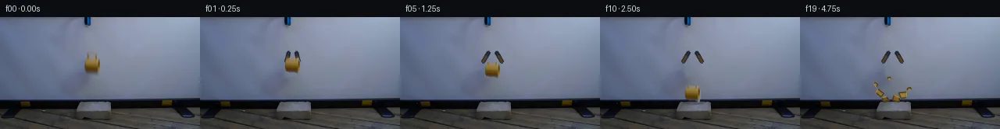

![首帧]()

Round 00
2026-11-05T07:57:17.239745+00:00像素候选变化代码 +256/−0inspection 更新
pixels 6f400a19c09030eb · code 3283f50a8f53580b
查看本轮 generate.py 真实 diff
--- previous/generate.py +++ current/generate.py @@ -0,0 +1,256 @@ +#!/usr/bin/env python3 +"""Generate the 20-frame PixelWorld continuation using local RGB operations only.""" + +from pathlib import Path +import math + +import cv2 +import numpy as np +from PIL import Image, ImageDraw, ImageFont + +import artifact_io + + +ROOT = Path(__file__).resolve().parent +W, H = 256, 144 + + +def alpha_over(dst, src, alpha, x, y): + """Alpha composite an RGB sprite into dst with clipping.""" + h, w = src.shape[:2] + x0, y0 = max(0, x), max(0, y) + x1, y1 = min(W, x + w), min(H, y + h) + if x0 >= x1 or y0 >= y1: + return + sx0, sy0 = x0 - x, y0 - y + sx1, sy1 = sx0 + (x1 - x0), sy0 + (y1 - y0) + a = alpha[sy0:sy1, sx0:sx1, None].astype(np.float32) / 255.0 + d = dst[y0:y1, x0:x1].astype(np.float32) + s = src[sy0:sy1, sx0:sx1].astype(np.float32) + dst[y0:y1, x0:x1] = np.clip(s * a + d * (1.0 - a), 0, 255).astype(np.uint8) + + +def make_clean_plate(source): + """Remove the held mug and the short jaws from the smooth screen plate.""" + mask = np.zeros((H, W), np.uint8) + # This region is wholly on the smoothly varying projection screen. + cv2.rectangle(mask, (105, 43), (133, 80), 255, -1) + plate = cv2.inpaint(source, mask, 5, cv2.INPAINT_TELEA) + + # Suppress any inpaint swirl with a local, data-fitted quadratic screen model. + yy, xx = np.mgrid[35:89, 94:145] + annulus = ((xx < 102) | (xx > 136) | (yy < 40) | (yy > 83)) + xf = xx[annulus].astype(np.float64) + yf = yy[annulus].astype(np.float64) + design = np.column_stack([ + np.ones_like(xf), xf, yf, xf * yf, xf * xf, yf * yf + ]) + fit_region = source[35:89, 94:145] + target_xx, target_yy = np.meshgrid(np.arange(105, 134), np.arange(43, 81)) + td = np.column_stack([ + np.ones(target_xx.size), target_xx.ravel(), target_yy.ravel(), + (target_xx * target_yy).ravel(), (target_xx * target_xx).ravel(), + (target_yy * target_yy).ravel() + ]) + modeled = np.empty((38, 29, 3), np.float64) + for c in range(3): + coef, *_ = np.linalg.lstsq(design, fit_region[..., c][annulus], rcond=None) + modeled[..., c] = (td @ coef).reshape(38, 29) + # Blend modeled center to the original/inpainted boundary over five pixels. + blend = np.ones((38, 29), np.float32) + for j in range(38): + for i in range(29): + edge = min(i, 28 - i, j, 37 - j) + blend[j, i] = np.clip(edge / 5.0, 0.0, 1.0) + roi = plate[43:81, 105:134].astype(np.float32) + smooth = np.clip(modeled, 0, 255).astype(np.float32) + plate[43:81, 105:134] = (roi * (1 - blend[..., None]) + smooth * blend[..., None]).astype(np.uint8) + return plate + + +def extract_mug(source): + """Extract the source-derived warm ceramic body, excluding the two holding tips.""" + x0, y0, x1, y1 = 105, 52, 133, 75 + crop = source[y0:y1, x0:x1].copy() + r = crop[..., 0].astype(np.int16) + g = crop[..., 1].astype(np.int16) + b = crop[..., 2].astype(np.int16) + warm = ((r - g) > 2) & ((g - b) > 4) & (r > 58) + # Exclude the screen-colored fringe and retain the single component around the cup. + binary = warm.astype(np.uint8) * 255 + binary = cv2.morphologyEx(binary, cv2.MORPH_CLOSE, np.ones((3, 3), np.uint8)) + binary = cv2.dilate(binary, np.ones((2, 2), np.uint8), iterations=1) + n, labels, stats, _ = cv2.connectedComponentsWithStats(binary, 8) + if n > 1: + # Largest warm object is the mug body. + keep = 1 + int(np.argmax(stats[1:, cv2.CC_STAT_AREA])) + binary = np.where(labels == keep, 255, 0).astype(np.uint8) … diff truncated; 169 more lines …